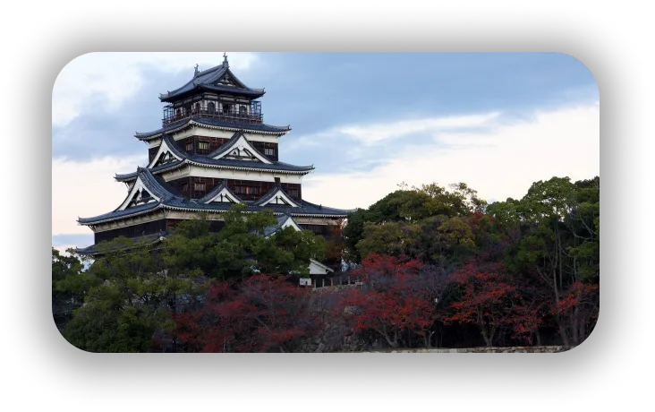
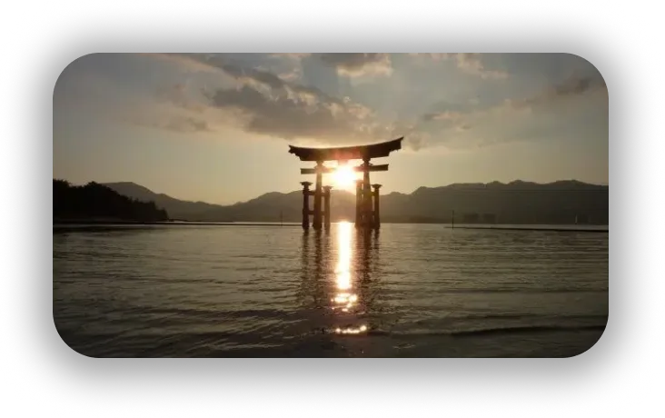

HIROSHIMA
Une ville mais pas seulement !
Hiroshima est une ville assez connue de tous. Même si l’on ne connait pas la ville ni ce qu’elle y intègre nous connaissons forcément tous son histoire tragique de la seconde guerre mondiale. Hiroshima signifie « large île » elle se situe sur l’île de Honshu, la plus grande île du territoire japonais. Mais il faut savoir que hiroshima n’est pas juste une histoire tragique, elle est aussi un lieu touristique énormément apprécié des touristes qui y viennent pour son paysage, ses monuments assez originaux et évidemment son histoire qui réussit a traversée le temps !
Quelques lieux à visiter...
Hiroshima connait de nombreux bâtiments de la culture japonnaise comme celui de son château, le « château d’hiroshima », malheureusement ce château d’abords construit en pin a été détruit par la seconde guerre mondiale en 1945, il a été reconstruit ensuite en 1958 en béton armée afin de mieux duré dans le temps (seulement la base principale a été reconstruite), et sert maintenant comme musée racontant son toute son histoire.
Image du chateau d'Hiroshima
Miyajama, on ne le connais pas de nom mais on la surement déjà vu ! ca célèbre photo avec un tori shinto posé sur un pilier pour donner l’illusion qu’il flotte sur l’eau, l’endroit est décrit comme l’un des 3 endroit les plus beaux a visité au japon, de part son paysage, mais aussi son histoire ! Considérée comme une ile sacrée (l’ile d’Itsukushima) elle est situé sur la baie d’hiroshima, il y aurait auparavant eu des divinités y habitant.
Structure Tori shinto sur l'eau a Miyajama
Hiroshima reste très différentes des autres métropoles du japon du faites qu’elle soit d’abords isolée mais aussi par ses lieux touristiques originaux par rapports aux autres villes, que ca soit part son architecture, sa culture, ou même sa végétation qui réussit a évoluer, voir s’améliorer au cours du temps.